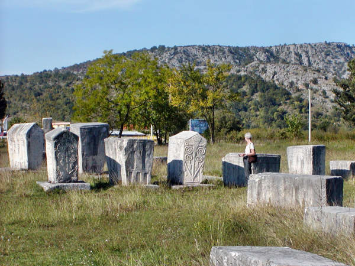
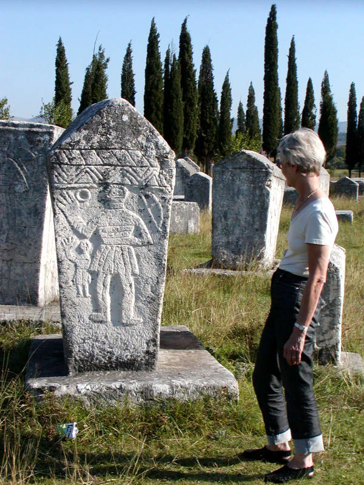

Bogomil
Bogomil culture and faith in Croatia

The Bogomils were a sect of religious dualists who practiced in Bosnia and Herzegovina between the 10th and the 14th centuries. They were mostly peasants and had a wide following.The Bogomils were severely anti-materialistic. The material world was borne of evil, and only through avoidance of all things material could a person attain closeness with the spiritual world. The Bogomils, therefore, rejected religious symbols, such as the cross. They also rejected the Trinity, sainthood, religious art, and the Old Testament.
Men and women achieved religious equality. Women were permitted to be
ordained and become spiritual leaders.
The concept of "Judgement
Day" was also denied by the Bogomils, who felt that all souls were able
to attain salvation.
Doctrine

Ordination was conferred by the congregation and not by any specially appointed minister. Marriage was not a sacrament. The Bogomils refused to fast on Mondays and Fridays, and they rejected monasticism.It is also held that they declared Christ to be the Son of God only through grace like other prophets, and that the bread and wine of the eucharist were not physically transformed into flesh and blood; that the last judgement would be executed by God and not by Jesus; that the images and the cross were idols and the veneration of saints and relics idolatry.
The
Bogomils taught that God had two sons, the elder Satanail and the
younger Michael. The elder son rebelled against the father and became
the evil spirit. After his fall he created the lower heavens and the
earth and tried in vain to create man; in the end he had to appeal to
God for the Spirit. After creation Adam was allowed to till the ground
on condition that he sold himself and his posterity to the owner of the
earth. Then Michael was sent in the form of a man; he became identified
with Jesus, and was "elected" by God after the baptism in the Jordan.
When the Holy Ghost (again Michael) appeared in the shape of the dove,
Jesus received power to break the covenant in the form of a clay tablet
(hierographon) held by Satanail from Adam. Satanail
was thus transformed into Satan. Through his machinations the
crucifixion took place, and Satan was the originator of the whole
church community with its churches, vestments, ceremonies, sacraments
and fasts, with its monks and priests. This world being the work of
Satan, the perfect must eschew any and every excess of its pleasure.
But the Bogomils did not go as far as to recommend asceticism.
 They
held the "Lord's Prayer" in high respect as the most potent weapon
against Satan, and had a number of conjurations against "evil spirits."
Each community had its own twelve "apostles," and women could be raised
to the rank of "elect." The Bogomils wore garments like friars and were
known as keen missionaries, travelling far and wide to
propagate their doctrines. Healing the sick and exorcising the evil
spirit, they traversed different countries and spread their apocryphal
literature along with some of the books of the Old Testament, deeply
influencing the religious spirit of the nations, and preparing them for
the Reformation.
They
held the "Lord's Prayer" in high respect as the most potent weapon
against Satan, and had a number of conjurations against "evil spirits."
Each community had its own twelve "apostles," and women could be raised
to the rank of "elect." The Bogomils wore garments like friars and were
known as keen missionaries, travelling far and wide to
propagate their doctrines. Healing the sick and exorcising the evil
spirit, they traversed different countries and spread their apocryphal
literature along with some of the books of the Old Testament, deeply
influencing the religious spirit of the nations, and preparing them for
the Reformation.
The essence of
Bogomilism is the duality in the creation of the world. This is exactly
why it is considered a heresy. Bogomils explained the earthly sinful
corporeal life as a creation of Satan, an angel that was sent to the
Earth. Due to this duality, their doctrine rejects everything that is
socially created and that does not come from the soul, the only divine
possession of the human. Therefore, the established Church, the state,
and the hierarchy is totally undermined by Bogomilism. Its followers
refuse to pay taxes, to work in serfdom, or to fight for their state.
The whole social system is overthrown, which on its part were
understood as suggesting disorder and propels destructivity for the
state, the church by its progenitors, that ultimately eradicated the
Bogomils.
(Text extracted from Wikipedia
and is so widely copied that I can not
determine the original author)